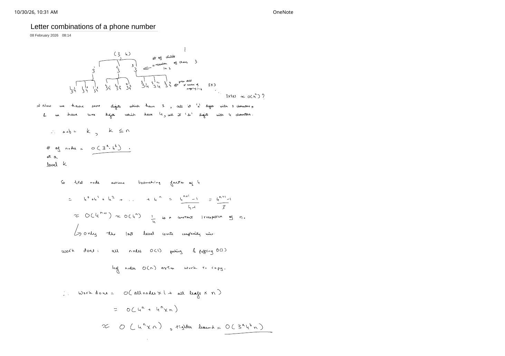
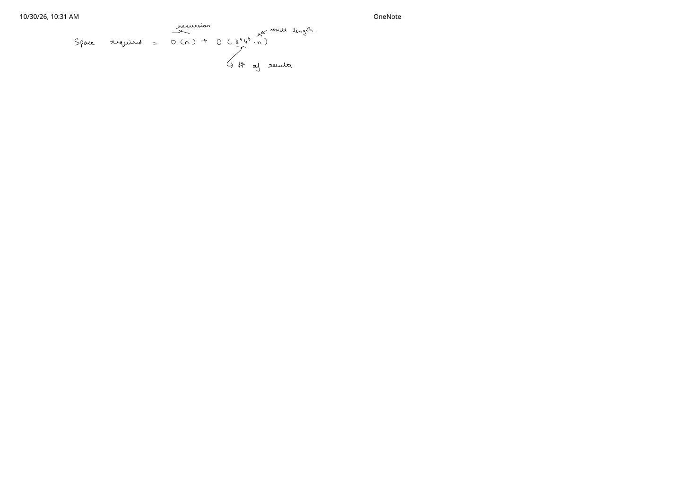
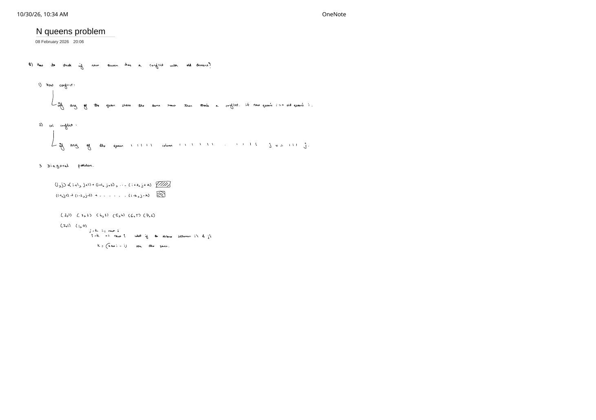

Word Search, Phone Keypad, Palindrome Cuts & N-Queens
Expanded from handwritten competitive coding study notes (02_Word_Search.pdf, 12_Letter_combinations_of_a_phone_number.pdf, 13_Palindrome_partitioning.pdf, 14_N_queens_problem.pdf)
Moving beyond integer arrays onto 2D grids, strings, and chessboards introduces richer state constraints: simple-path non-self-intersection on a grid, variable branching factors per string position, contiguous substring partitioning, and $O(1)$ geometric conflict hashing. Each of these four notes isolates one classic trap and its exact mathematical resolution.
1. Word Search (LeetCode 79) — Why Is Backtracking Required?
Given an $R \times C$ character grid and a target word, determine if word can be formed by sequentially adjacent (horizontal or vertical) cells where the same cell may not be used more than once in the path.
The "ABCESEEEFS" Counterexample Against Plain DFS (02_Word_Search.pdf)
A common beginner mistake is to allocate a fresh visited matrix for each starting cell (r0, c0), run standard graph DFS, and never unmark visited[r][c] when a branch fails. That works for connected-components or shortest-path reachability—so why does it fail on LeetCode's famous test case below?
(r, c) can reach the goal depends only on (r, c). In Word Search, whether (r, c, k) can finish the suffix word[k..] depends on which cells our active prefix already consumed! Hence visited is path-local state, not a global memo table, and must be restored on return.class Solution {
static constexpr int dr[4] = {1, -1, 0, 0};
static constexpr int dc[4] = {0, 0, 1, -1};
bool dfs(vector<vector<char>>& board, const string& word,
int r, int c, int k) {
if (board[r][c] != word[k]) return false;
if (k + 1 == (int)word.size()) return true; // matched entire word!
char saved = board[r][c];
board[r][c] = '#'; // CHOOSE: mark visited in-place with O(1) extra space
for (int d = 0; d < 4; ++d) {
int nr = r + dr[d], nc = c + dc[d];
if (nr >= 0 && nr < (int)board.size() &&
nc >= 0 && nc < (int)board[0].size() &&
board[nr][nc] != '#') {
if (dfs(board, word, nr, nc, k + 1)) {
board[r][c] = saved; // keep caller's board clean even on success
return true;
}
}
}
board[r][c] = saved; // UNDO: release cell for alternative sibling routes!
return false;
}
public:
bool exist(vector<vector<char>>& board, string word) {
for (int r = 0; r < (int)board.size(); ++r) {
for (int c = 0; c < (int)board[0].size(); ++c) {
if (dfs(board, word, r, c, 0)) return true;
}
}
return false;
}
};Complexity: Starting from $R \cdot C$ cells, the first step tries up to 4 neighbors and every subsequent step tries at most 3 unvisited neighbors (we cannot step back onto the cell we just came from), giving $O(R \cdot C \cdot 3^{L - 1})$ time and $O(L)$ call-stack space for $L = |\text{word}|$.
2. Letter Combinations of a Phone Number (LeetCode 17)
Given a string of digits from '2'–'9', return all possible letter combinations they map to on a telephone keypad (where 2..6, 8 have 3 letters and 7, 9 have 4 letters).
Tight $O(n \cdot 3^a \cdot 4^b)$ Geometric-Series Derivation (12_Letter_combinations_of_a_phone_number.pdf)
Suppose the input of length $n$ contains $a$ three-letter digits and $b$ four-letter digits ($a + b = n$):
- Leaves at depth $n$: Exactly $3^a \cdot 4^b$ combinations.
- Total nodes across all levels (worst case $b = n$, branching factor $4$): $$4^0 + 4^1 + 4^2 + \dots + 4^n = \frac{4^{n + 1} - 1}{4 - 1} = \frac{4^{n + 1} - 1}{3} = \Theta(4^n).$$ As noted on page 1: “only the last level counts complexity-wise”—in any geometric series with branching factor $\ge 2$, the leaf layer alone is within a constant factor of the entire tree!
- Internal vs. leaf work: Internal nodes do $O(1)$
push_back/pop_back; each leaf copies an $n$-character string intoansin $O(n)$: $$\text{Total Time} = O(\text{all nodes} \times 1 + \text{leaves} \times n) = O(n \cdot 3^a \cdot 4^b) \subseteq O(n \cdot 4^n).$$ - Space (page 2): $O(n)$ recursion stack $+ O(n \cdot 3^a \cdot 4^b)$ output strings.
class Solution {
static constexpr array<string_view, 10> kPad = {
"", "", "abc", "def", "ghi", "jkl", "mno", "pqrs", "tuv", "wxyz"
};
void dfs(int idx, const string& digits, string& cur, vector<string>& ans) {
if (idx == (int)digits.size()) {
ans.push_back(cur); // O(n) copy at each of the 3^a * 4^b leaves
return;
}
for (char ch : kPad[digits[idx] - '0']) {
cur.push_back(ch);
dfs(idx + 1, digits, cur, ans);
cur.pop_back();
}
}
public:
vector<string> letterCombinations(string digits) {
if (digits.empty()) return {};
vector<string> ans;
string cur;
cur.reserve(digits.size());
dfs(0, digits, cur, ans);
return ans;
}
};3. Palindrome Partitioning (LeetCode 131) — Contiguous Prefix Cuts, Not Subsequences
Given a string s = "aaba", partition s such that every piece in the partition is a palindrome: [["a","a","b","a"], ["a","aba"], ["aa","b","a"]].
Crucial Distinction From 13_Palindrome_partitioning.pdf: No Skipping Indices!
On "aaba" (indices 0, 1, 2, 3), when i = 0 and the loop advances to j = 2, we are not pairing s[0] with s[2] to form "ab" (skipping s[1] is illegal—"ab" is a subsequence, not a contiguous substring!). Instead:
jchooses the inclusive end index of the next contiguous cuts[i .. j].- Only if
s[i .. j]is a palindrome (e.g.,s[0..0] = "a"✓ ors[0..1] = "aa"✓, whereass[0..2] = "aab"✗ ands[0..3] = "aaba"✗) do we recurse onj + 1—which begins a fresh start with no leftover prefix on the suffixs[j + 1 .. n - 1]!
class Solution {
public:
vector<vector<string>> partition(string s) {
int n = (int)s.size();
// Precompute palindrome table in O(n^2) so every cut check is O(1)
vector<vector<uint8_t>> isPal(n, vector<uint8_t>(n, 0));
for (int len = 1; len <= n; ++len) {
for (int i = 0; i + len - 1 < n; ++i) {
int j = i + len - 1;
isPal[i][j] = (s[i] == s[j]) && (len <= 2 || isPal[i + 1][j - 1]);
}
}
vector<vector<string>> ans;
vector<string> parts;
auto dfs = [&](auto& self, int i) -> void {
if (i == n) {
ans.push_back(parts);
return;
}
for (int j = i; j < n; ++j) {
if (!isPal[i][j]) continue; // prune non-palindromic prefix s[i..j]
parts.push_back(s.substr(i, j - i + 1));
self(self, j + 1); // fresh start at index j + 1
parts.pop_back();
}
};
dfs(dfs, 0);
return ans;
}
};Complexity: A string of length $n$ has $n - 1$ internal cut slots, giving $2^{n - 1}$ possible partitions (all valid on "aaaa..."). Copying characters at leaves costs $O(n)$, so worst-case time is $O(n \cdot 2^n)$ with $O(n^2)$ auxiliary table space (or $O(n)$ if checking palindromes with two pointers on the fly).
4. N-Queens (LeetCode 51) — Conflict Equations & $O(1)$ Diagonal Hashing
Place $n$ queens on an $n \times n$ chessboard so no two queens attack each other along any row, column, or diagonal.
Deriving the Three Conflict Rules (14_N_queens_problem.pdf)
Suppose we place one queen per row r = 0, 1, ..., n - 1, and want to test candidate square (r, c) against previously placed queens (old_r, old_c):
- Row conflict (
r == old_r): Eliminated automatically because recursion places at most one queen in rowrand immediately advances tor + 1! - Column conflict (
c == old_c): Tracked in $O(1)$ with a boolean arraycol[c]of size $n$. - Diagonal conflicts: Look at the coordinate steps written in
14_N_queens_problem.pdf:- Main diagonal (
\): Moving $(r, c) \to (r + k, c + k)$ or $(r - k, c - k)$—for example(1,0), (2,1), (3,2), (4,3), (5,4), (6,5), (7,6)—adds the exact same offset $k$ to both coordinates, so $r - c$ is constant! Shifting by $n - 1$ maps $r - c \in [-(n - 1),\, n - 1]$ into0 .. 2n - 2. - Anti-diagonal (
/): Moving $(r, c) \to (r + k, c - k)$ or $(r - k, c + k)$ keeps $r + c$ constant in0 .. 2n - 2! - Coordinate-pair form: Equivalently, two queens at $(r_1, c_1)$ and $(r_2, c_2)$ share either diagonal iff $|r_1 - r_2| = |c_1 - c_2|$.
- Main diagonal (
col[n], diag1[2n - 1], and diag2[2n - 1] makes every placement check $O(1)$.class Solution {
void dfs(int r, int n, vector<string>& board,
vector<uint8_t>& col, vector<uint8_t>& diag1, vector<uint8_t>& diag2,
vector<vector<string>>& ans) {
if (r == n) {
ans.push_back(board); // O(n^2) snapshot of valid board
return;
}
for (int c = 0; c < n; ++c) {
int d1 = r - c + n - 1;
int d2 = r + c;
if (col[c] || diag1[d1] || diag2[d2]) continue; // O(1) conflict check
// CHOOSE
board[r][c] = 'Q';
col[c] = diag1[d1] = diag2[d2] = 1;
// EXPLORE
dfs(r + 1, n, board, col, diag1, diag2, ans);
// UNDO
col[c] = diag1[d1] = diag2[d2] = 0;
board[r][c] = '.';
}
}
public:
vector<vector<string>> solveNQueens(int n) {
vector<vector<string>> ans;
vector<string> board(n, string(n, '.'));
vector<uint8_t> col(n, 0), diag1(2 * n - 1, 0), diag2(2 * n - 1, 0);
dfs(0, n, board, col, diag1, diag2, ans);
return ans;
}
};Complexity: Row 0 has $n$ column choices, row 1 has at most $n - 2$ safe columns, row 2 at most $n - 4$, etc., bounding search nodes well below $O(n!)$ with $O(1)$ per-cell check (plus $O(n^2)$ per valid board copied) and $O(n^2)$ board space ($O(n)$ if only counting solutions in N-Queens II, LC 52).
From the Handwritten Notes
Expand the original handwritten pages below to inspect the exact derivations, dry runs, and annotations:
View original note — 02_Word_Search.pdf (Page 1: Why backtracking is required on "ABCESEEEFS")

02_Word_Search.pdf, page 1: the ABCE / SFES / ADEE board and target "ABCESEEEFS" demonstrating why permanently marking visited cells inside a DFS branch blocks valid sibling routes.View original note — 12_Letter_combinations_of_a_phone_number.pdf (Page 1: Geometric series & O(3^a · 4^b · n) bound)


12_Letter_combinations_of_a_phone_number.pdf, page 1: keypad tree on (3, 4), $\frac{4^{n+1}-1}{3}$ geometric sum showing leaf dominance, and tight $O(3^a 4^b n)$ time complexity.View original note — 12_Letter_combinations_of_a_phone_number.pdf (Page 2: Stack & output space complexity)


12_Letter_combinations_of_a_phone_number.pdf, page 2: separating $O(n)$ recursion stack space from $O(3^a 4^b \cdot n)$ output storage.View original note — 13_Palindrome_partitioning.pdf (Page 1: Contiguous cuts on "aaba")

13_Palindrome_partitioning.pdf, page 1: trace on "aaba" contrasting valid contiguous substring cuts against illegal non-substring skips.View original note — 14_N_queens_problem.pdf (Page 1: Row, column, and diagonal conflict math)


14_N_queens_problem.pdf, page 1: deriving row, column, and equal-offset diagonal conflict equations $(i \pm k, j \pm k)$.